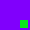

Please read the instructions carefully
General Instructions:
-
- Total duration of kktScholarship exam is 100 min.
- The clock will be set at the server. The countdown timer in the top right corner of screen will display the remaining time available for you to complete the examination. When the timer reaches zero, the examination will end by itself. You will not be required to end or submit your examination.
-
The Questions Palette displayed on the right side of screen will show the status of each question using one of the following symbols:
- You have not visited the question yet.
- You have not answered the question.
- You have answered the question.
- You have NOT answered the question, but have marked the question for review.
-  The question(s) "Answered and Marked for Review" will be considered for evalution.
- You have not visited the question yet.
- You can click on the ">" arrow which apperes to the left of question palette to collapse the question palette thereby maximizing the question window. To view the question palette again, you can click on "<" which appears on the right side of question window.
- You can click on your "Profile" image on top right corner of your screen to change the language during the exam for entire question paper. On clicking of Profile image you will get a drop-down to change the question content to the desired language.
- You can click on to navigate to the bottom and to navigate to top of the question are, without scrolling.
Navigating to a Question:
-
To answer a question, do the following:
- Click on the question number in the Question Palette at the right of your screen to go to that numbered question directly. Note that using this option does NOT save your answer to the current question.
- Click on Save & Next to save your answer for the current question and then go to the next question.
- Click on Mark for Review & Next to save your answer for the current question, mark it for review, and then go to the next question.
Answering a Question:
-
Procedure for answering a multiple choice type question:
- To select you answer, click on the button of one of the options.
- To deselect your chosen answer, click on the button of the chosen option again or click on the Clear Response button
- To change your chosen answer, click on the button of another option
- To save your answer, you MUST click on the Save & Next button.
- To mark the question for review, click on the Mark for Review & Next button.
- To change your answer to a question that has already been answered, first select that question for answering and then follow the procedure for answering that type of question.
Navigating through sections:
- Sections in this question paper are displayed on the top bar of the screen. Questions in a section can be viewed by click on the section name. The section you are currently viewing is highlighted.
- After click the Save & Next button on the last question for a section, you will automatically be taken to the first question of the next section.
- You can shuffle between sections and questions anything during the examination as per your convenience only during the time stipulated.
- Candidate can view the corresponding section summery as part of the legend that appears in every section above the question palette.
Please note all questions will appear in your default language. This language can be changed for a particular question later on.